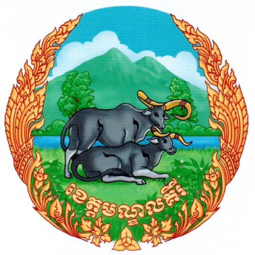

ខេត្តមណ្ឌលគីរី ជាខេត្តស្ថិតនៅភាគខាងកើតប្រទេសកម្ពុជា។ ខេត្តនេះមានផ្ទៃដីធំជាងគេ តែមានប្រជាជនតិចជាងគេ។ ទីរួមខេត្តឈ្មោះក្រុងសែនមនោរម្យ។ ខេត្តមណ្ឌលគីរីជាតំបន់ទេសចរណ៏ធម្មជាតិធំមួយនៃព្រះរាជាណាចក្រកម្ពុជា ដែលមានតំបន់ទេសចរណ៏ធម្មជាតិជាច្រើនដូចជាទឹកជ្រោះប្រកបដោយហ្វូងមច្ឆាជាច្រើនប្រភេទ
ព្រមទាំងរុក្ខជាតិ សត្វព្រៃ ព្រៃកោងកាង និងភ្នំតូចធំជាច្រើន។ ខេត្តមណ្ឌលគីរីជាខេត្តមួយដែលសិ្ថតនៅភូមិភាគឦសាននៃប្រទេសកម្ពុជា ហើយមានចំងាយ ៣៨២គីឡូម៉ែត្រពីរាជធានីភ្នំពេញ និមិត្តសញ្ញានៃខេត្តគឺតំណាងអោយសត្វគោព្រៃ ដែលជាថនិកសត្វជាតិរបស់កម្ពុជា។ចំពោះចំនួនប្រជាពលរដ្ឋសរុបនៅក្នុងខេត្តមណ្ឌលគិរីគឺ៩៣,៤៤១នាក់
ដែលស្មើនឹង២២,២២០គ្រួសារដែលមានដង់ស៊ីតេ ៧នាក់ក្នុងមួយគីឡូម៉ែត្រ។ ប្រជាពលរដ្ឋដែលជាជនជាតិដើមភាគតិចនៅទូទាំងខេត្តសរុបមានចំនួន ៥៣,៤៤៤នាក់ ស្មើនឹង៥៧,២០ភាគរយ នៃប្រជាជនសរុប ដែលមាន ៨ជនជាតិ ក្នុងនោះរួមមាន៖ជនជាតិព្នង ក្រោល គ្រឹង ស្ទៀង ទំពួន
ចារាយ ថ្មួន និងកួយ។